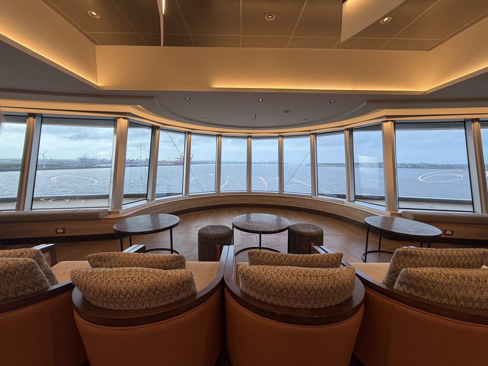

Family travel
Planning a Cruise With a Parent Who Uses a Walker or Wheelchair

Start with your parent, not the ship. What do they want from this trip? Time ashore, time with the grandkids, a week of someone else doing the cooking? The cabin, the ship and the route all follow from that.
This is their trip as much as yours, so bring them into the decisions. They know better than anyone what their walker, chair or scooter needs, and what a good day looks like for them.
What "accessible cabin" actually means
There's no single definition that holds from ship to ship. Many lines separate fully accessible cabins, built for a wheelchair or scooter, from "ambulatory" cabins, which suit someone who walks with a cane or walker but may not have the doorway width or bathroom layout a chair needs.
So ask about the specific ship and the specific cabin number, not just the category:
- Is the shower roll-in, or is there a tub or a raised edge?
- Is there a shower seat, and where are the grab bars?
- How wide are the cabin and bathroom doors?
- Is there room to turn, and to get around the bed?
- How high is the bed, and can it be set up with access on the side your parent needs?
- Are there thresholds at the cabin door, bathroom or balcony?
- Will the walker, chair or scooter fit inside the cabin, with room left over?
Accessible cabins are limited, so book early once you've settled on a ship and dates. A regular cabin in a great spot isn't a substitute if the bathroom won't work.
The walk to dinner matters as much as the cabin
"Near the elevator" is a good start, but it isn't the whole story. A cabin can be steps from an elevator and still be a long way from the dining room. Look at the deck plan and trace the route from the cabin to the places your parent will actually go: dinner, the theater, the lounge they'll end up calling theirs.
Ask whether that route has steps, thresholds or tight turns, and whether the elevators reach every part of it. For a walker, the distance matters most. For a chair or scooter, doorways and turning space matter too.
Bring a chair, or rent a scooter?
Either can work. Many lines work with rental companies that deliver a scooter or wheelchair to the ship, sometimes straight to the cabin. Ask who handles delivery and pickup, and whether it will be waiting when you board.
Check the device's size against the cabin door and floor space. Lines often require scooters and chairs to be kept and charged in the cabin, not in the corridor, and that can decide whether a rental is a help or a tripping hazard.
If your parent brings their own, ask both the airline and the cruise line about its size, battery and handling. A chair that's fine for one part of the trip isn't automatically fine for every part.
Ports: docked or tendered
At a docked port, you leave by gangway or ramp. That's usually simpler, though the gangway can be steep at low or high tide, and a docked ship doesn't mean a step-free town. At a tender port, the ship anchors offshore and small boats take you in, which can mean steps, a gap to cross, or leaving a scooter behind. I wrote more about that in tender ports explained.
If time ashore is a big part of what your parent wants, favor a route with docked ports, and confirm that any shore excursion's transport can take their chair or scooter.
Getting to the ship
Request airport wheelchair assistance with the airline for every flight, including connections, and say exactly where it's needed: check-in to gate, between gates, or plane to baggage claim. The U.S. Department of Transportation explains what travelers with disabilities can request.
Then plan the gap between the airport and the ship. Ask whether the transfer vehicle can take your parent and their chair or scooter together. Better still, fly in a day early and stay near the port, so embarkation day starts calm instead of rushed.
Travel insurance, sooner than you'd think
If your parent has a pre-existing condition, the timing of the insurance matters. Many policies offer a pre-existing condition waiver only if you buy within a short window after the first trip payment, often a couple of weeks, and the details vary by policy and state. So look into it as soon as you put down a deposit, and read the policy itself rather than a summary.
A simple order to work in
- Talk with your parent about what they want from the trip.
- Choose the ship and route, with an eye on tender ports.
- Ask the cruise line about the specific cabin and the routes from it.
- Arrange the scooter or chair, airport assistance and transfers.
- Sort out insurance right after the first payment.
A cruise is one of the easier ways to travel together: you unpack once, the cabin is always there to come back to, and nobody has to choose a restaurant every night. When the ship and route are right, the trip gets to be about the trip.
Would I book this?
Yes, and it's the kind of trip where planning pays off most. I start with what you and your parent want from the week, check the cabin and the ship against how they actually get around, and get the cruise line's answers before you commit.
If a family trip is taking shape, tell me about it.
Related: Tender ports explained